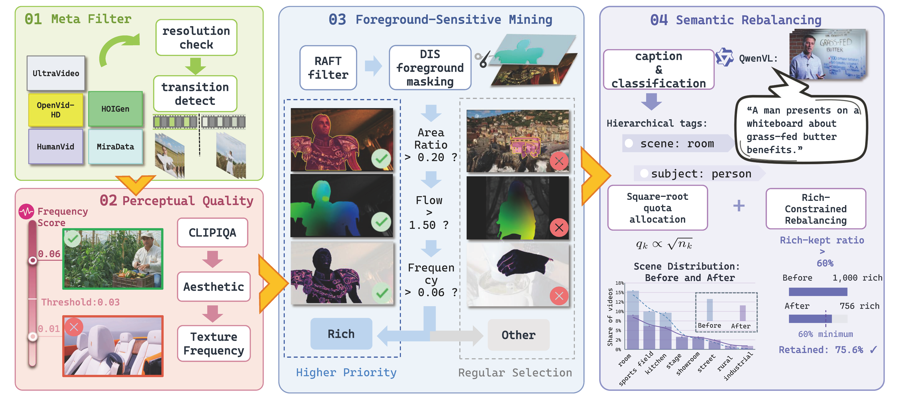
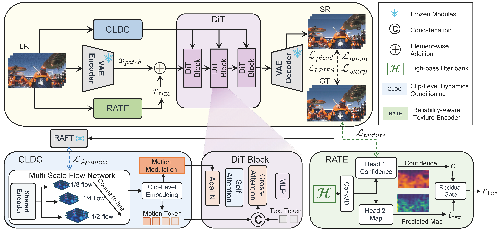
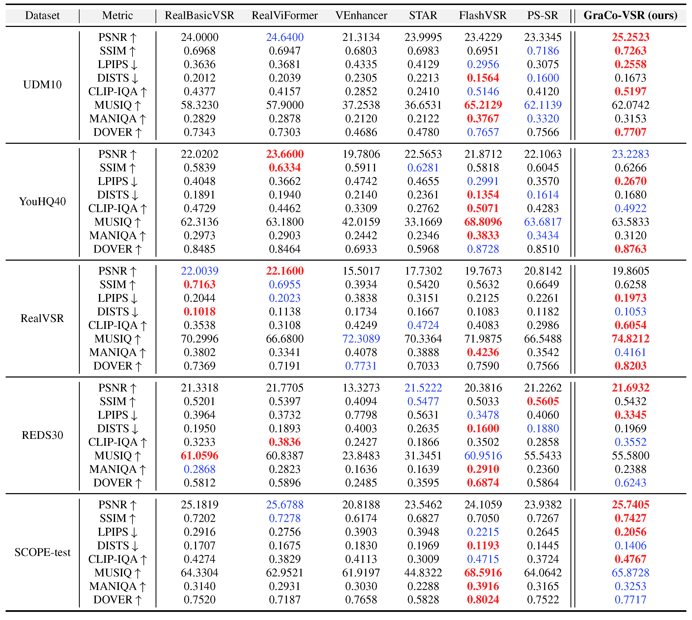
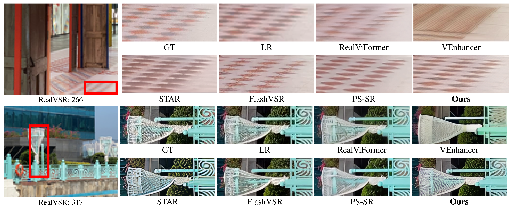
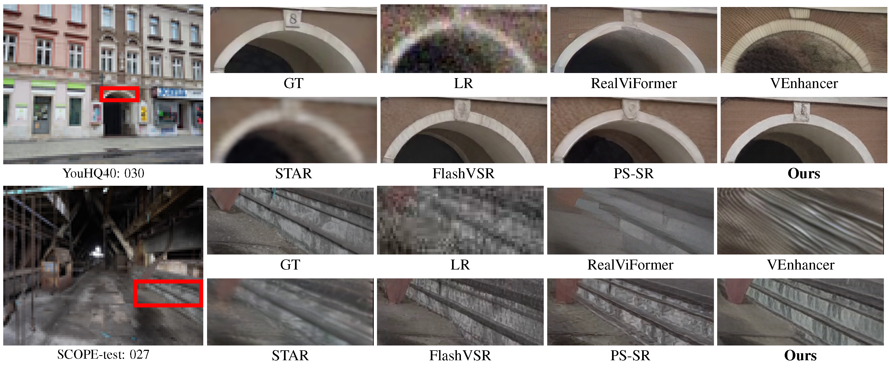
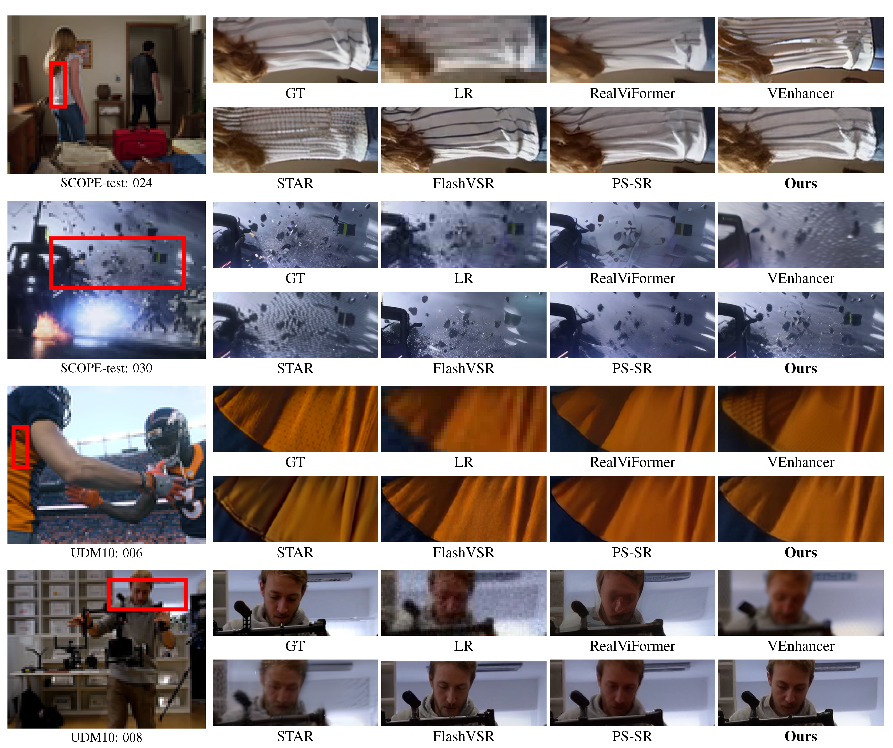
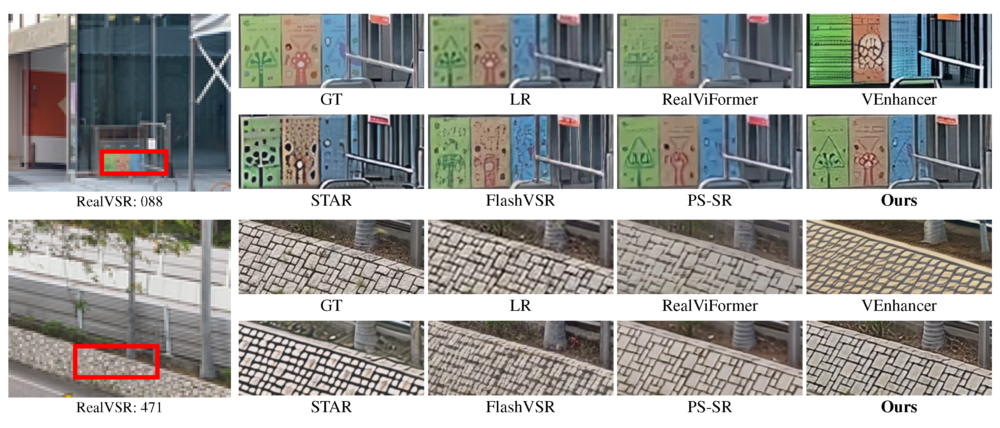

Abstract
Diffusion models have shown superior performance in video super-resolution (VSR). However, restoring diverse real-world content remains challenging due to the lack of balanced semantic coverage in existing training data. In this paper, we introduce a structured curation pipeline for open-domain VSR, SCOPE. In this pipeline, we combine task-oriented video selection with hierarchical semantic rebalancing. Applying this pipeline to a large-scale collection of data sources, we construct the SCOPE-VSR dataset for training and SCOPE-test for testing. SCOPE-VSR has approximately 27k videos with a balanced and diverse coverage of various real-world scenarios and subjects. In addition, we propose GraCo-VSR, a novel framework for one-step video restoration. GraCo-VSR adopts a reliability-aware design with explicit supervision to reduce degradation-induced distortions in motion and texture guidance. This design enables the model to better leverage the diverse training content in SCOPE-VSR, thereby supporting generalization across varied scenarios. Experiments demonstrate that our model exhibits strong performance on both perceptual fidelity and visual quality.
Method
SCOPE: Dataset Construction

We propose SCOPE, a systematic pipeline that combines multi-stage curation with semantic rebalancing. We collect approximately 0.6 million video clips from multiple domains, including OpenVid-HD, UltraVideo, MiraData, HumanVid, and HOIGen. The original collection contains. By applying the pipeline, we extract 27,351 clips to form the final SCOPE-VSR dataset.
Representative Videos from SCOPE-VSR
GraCo-VSR: Architecture

We introduce GraCo-VSR, a one-step video restoration framework which provides reliable and granularity-aligned guidance for open-domain VSR. The Reliability-Aware Texture Encoder (RATE) is designed to extract confidence-weighted local texture cues, while the Clip-Level Dynamics Conditioning (CLDC) is designed to provide robust clip-level motion guidance.
Results
Quantitative Results (click to expand)
- Quantitative results on synthetic and real-world datasets (Tab. 1 of the main paper)

Qualitative Results (click to expand)
- Visual comparisons on the real-world RealVSR dataset (Fig. 6 of the main paper)

- Visual comparisons on the synthetic YouHQ40 and SCOPE-test datasets (Fig. 7 of the main paper)

More Results (click to expand)
- Additional visual comparisons on UDM10 and SCOPE-test

- Additional visual comparisons on RealVSR

BibTeX
@article{liao2027scopevsr,
title={Scope-VSR: A Broad-Coverage Training Dataset for Video Super-Resolution},
author={Liao, Gengyu and Yong, Yechun and Chen, Zheng and Li, Jianze and Zhang, Ziqing and Kong, Linghe and Zhang, Yulun},
journal={arXiv preprint},
year={2027}
}